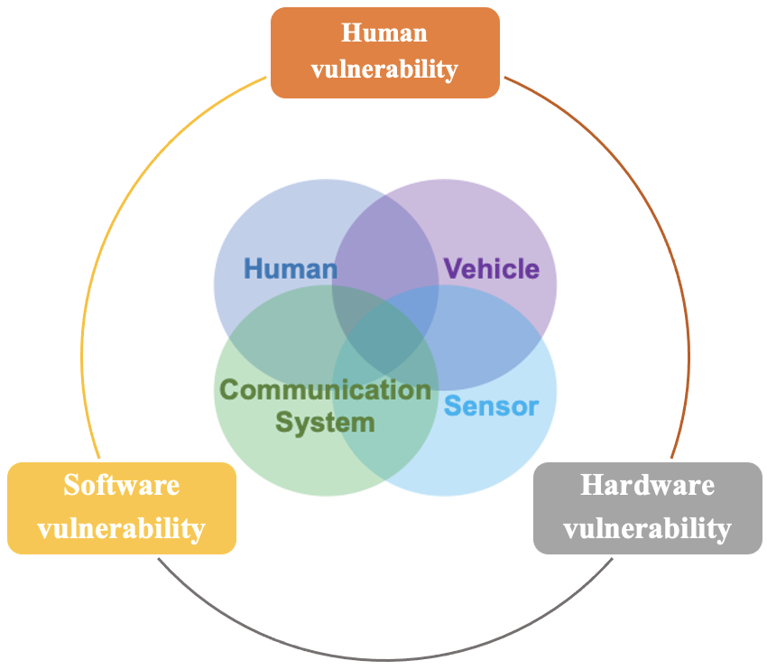

Transportation Cybersecurity
My research focuses on addressing critical cybersecurity challenges emerging from advancements in connectivity and automation technologies. This interdisciplinary work intersects cybersecurity, artificial intelligence (AI), human factors, human-machine interaction (HMI), and transportation.
My research studies include:

- Advanced Attack Modeling in Mixed-traffic
- Cyberattack Impacts in Mixed-traffic
- Proactive Defense Strategy Design for CAVs
- Modeling Malicious Information Propagation under Connected Vehicles
Driver Behavior & Human-Automation Interaction
Over the past years, I have been actively involved in designing and implementing diverse driving simulator experiments at the Autonomous & Connected Transportation (ACT) Lab
at Georgia Tech and the Driving Simulator Lab at Purdue University.
These experiments, uniquely tailored to address pressing questions in transportation research, focus on:
Exploring the psychophysiological impacts of real-time information on driver cognition in inherently multitasking, congested driving environments.
Investigating driver takeover behavior under Level 3 vehicular automation.
Assessing the influence of built environment design on the adoption of autonomous vehicles.
Understanding human driver behavior in mixed-flow traffic involving connected and autonomous vehicles.
As a leader in Georgia Tech’s Autonomous and Connected Transportation Lab, particularly in managing the Driving Simulator Lab, I have gained valuable expertise in overseeing complex facilities, conducting research with real-world applications, and mentoring diverse teams of emerging professionals. Below are examples of my development demos:
Below is a summary of key research projects I have participated in:
-
National Science Foundation (NSF): Fostering Smart and Sustainable Travel through Engaged Communities using
Integrated Multidimensional Information-Based Solutions, 2023-present.
National Institutes of Health (NIH): Piloting Augmented Reality Cues for Enhancing Driving Safety in Glaucoma,
2022-2023.
City of Peachtree Corners, GA: Driving Simulator-Based Study of the Impacts of Various Roadway Design
Modifications on the Curiosity Lab Test Track, 2020-2021.
U.S. Department of Transportation (USDOT): Using Driving Simulator Environment to Determine Interactions
between User Behavior and Infrastructure Design Under Autonomous Vehicles, 2019-2021.
Studying the interactions between user behavior and infrastructure design in autonomous vehicle environments.
Evaluating contributing factors on the adoption of connected and autonomous vehicles (CAVs).
U.S. Department of Transportation (USDOT): Impacts of In-Vehicle Alert Systems on Situational Awareness and Driving Performance in Level 3
Automation, 2018-2019.
U.S. Department of Transportation (USDOT): Design of Urban Landscape and Road Networks to Accommodate CAVs, 2017-2019.
Developing urban landscape and road network designs to maximize safety and comfort for all road users, including motorists, public transit users, cyclists, and pedestrians.